1. Основные законы оптики. Полное отражение
Закон прямолинейного распространения света: свет в оптически однородной среде распространяется прямолинейно.
Закон независимости световых пучков: эффект, производимый отдельным пучком, не зависит от того, действуют ли одновременно остальные пучки или они устранены.
Закон отражения света: отраженный луч лежит в одной плоскости с падающим лучом и перпендикуляром, проведенным к границе раздела двух сред в точке падения; угол отражения равен углу падения .
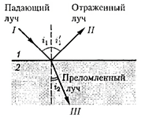
Закон преломления света: луч падающий, луч преломлённый и перпендикуляр, проведённый к границе раздела в точке падения, лежат в одной плоскости; отношение синуса угла падения к синусу угла преломления есть величина постоянная для данных сред.
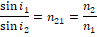
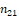 - относительный показатель преломления
 – абсолютный показатель
преломления
– абсолютный показатель
преломления
Явление полного отражения: при переходе луча из более плотной оптической среды в менее плотную существует такой угол iпр, при котором луч на границе перемены сред полностью отражается.
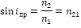
Явление полного отражения используется в призмах полного отражения.
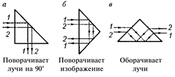
Такие призмы применяются 15 оптических приборах (например, в биноклях, перископах)
2. Тонкие линзы. Изображения предметов с помощью линз
Раздел оптики, в котором законы распространения света рассматриваются на основе представления о световых лучах, называется геометрической оптикой.
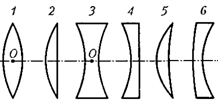
Линза называется тонкой если ее толщина (расстояние между ограничивающими поверхностями) значительно меньше по сравнению с радиусами поверхностей, ограничивающих линзу. Прямая, проходящая через центры кривизны поверхностей линзы, называется главной оптической осью.
По оптическим свойствам линзы делятся на собирающие и рассеивающие.
Принцип Ферма, или принцип наименьшего времени: действительный путь распространения света (траектория светового луча) есть путь, для прохождения которого свету требуется минимальное время по сравнению с любым другим мыслимым путем между теми же точками.
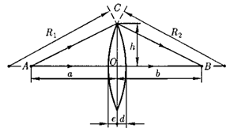
a и b соответственно расстояние до предмета и до изображения
О - оптический центр линзы
Формула тонкой линзы:
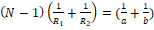,
где N – показатель преломления материала линзы
Фокусное расстояние тонкой линзы:
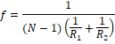
Фокус – это точка, в которой после преломления собираются все лучи, падающие на линзу параллельно главной оптической оси.
Оптическая сила линзы:
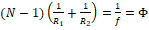
(диоптрий). – линза собирающая, – рассеивающая
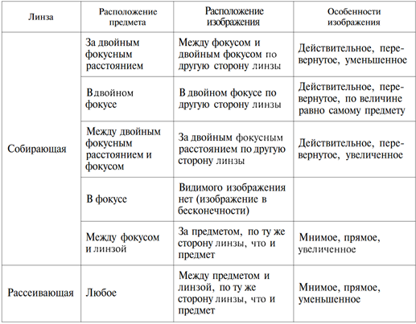
3. 🤓 Аберрации (погрешности) оптических систем
4. Основные фотометрические величины и их единицы
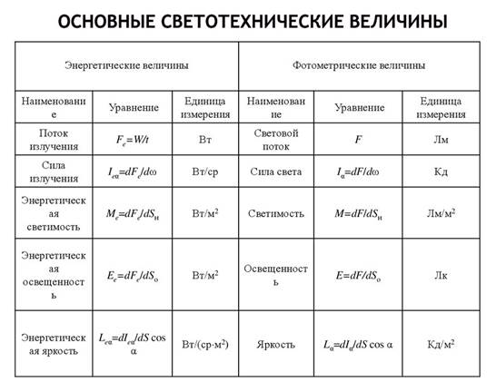
5. Элементы электронной оптики
6. 🤓 Развитие представлений о природе света
7. !Когерентность и монохроматичность световых волн
Монохроматические волны — неограниченные в пространстве волны одной определённой и строго постоянной частоты.
Когерентность волны означает, что в различных пространственных точках волны колебания происходят синхронно, то есть разность фаз между двумя точками не зависит от времени
Когерентность и монохроматичность является главным условием интерференции волн.
8. Интерференция света
9. Методы наблюдения интерференции света